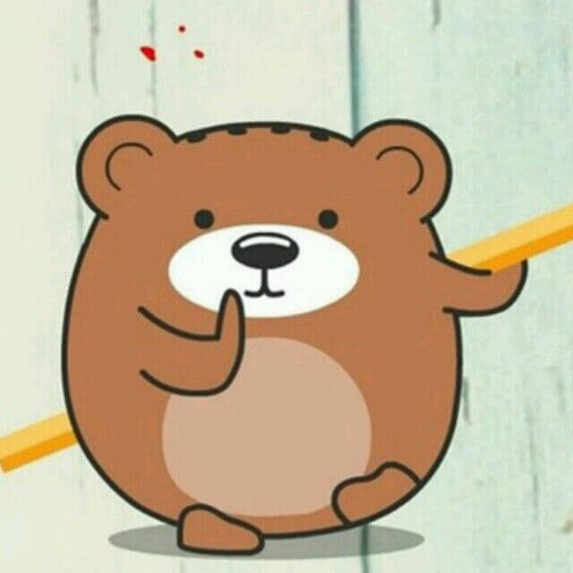

CSS3 动画
CSS3 @keyframes 规则
如需在 CSS3 中创建动画，您需要学习 @keyframes 规则。
@keyframes 规则用于创建动画。在 @keyframes 中规定某项 CSS 样式，就能创建由当前样式逐渐改为新样式的动画效果。
浏览器支持
Internet Explorer 10、Firefox 以及 Opera 支持 @keyframes 规则和 animation 属性。
Chrome 和 Safari 需要前缀 -webkit-。
注释：Internet Explorer 9，以及更早的版本，不支持 @keyframe 规则或 animation 属性。
什么是 CSS3 中的动画？
动画是使元素从一种样式逐渐变化为另一种样式的效果。
您可以改变任意多的样式任意多的次数。
请用百分比来规定变化发生的时间，或用关键词 "from" 和 "to"，等同于 0% 和 100%。
0% 是动画的开始，100% 是动画的完成。
为了得到最佳的浏览器支持，您应该始终定义 0% 和 100% 选择器。
例子：
案例一：无限循环转圈：

案例二：圆形轨迹移动
案例三：wifi动画